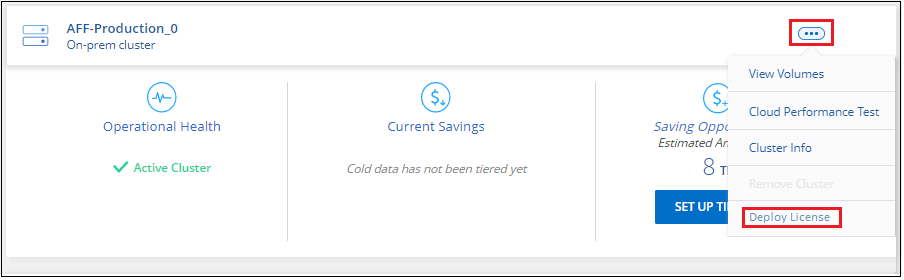

Demander de modifier un document
Demander de modifier un document Modifier sur GitHub
Modifier sur GitHub Guide des contributeurs
Guide des contributeursConfiguration des licences pour NetApp Cloud Tiering
Contributeurs
Une version d’essai gratuite de 30 jours de Cloud Tiering commence lorsque vous configurez le Tiering à partir du premier cluster. Après la fin de l’essai gratuit, vous devrez payer le prix Cloud Tiering par le biais d’un abonnement annuel ou à l’utilisation sur le marché de votre fournisseur cloud, d’une licence BYOL de NetApp ou d’une combinaison des deux.
Quelques remarques avant de lire plus loin :
-
Si vous vous êtes déjà abonné à BlueXP (PAYGO) sur le marché de votre fournisseur cloud, vous êtes également automatiquement abonné à Cloud Tiering à partir des systèmes ONTAP sur site. Un abonnement actif s’affiche dans l’onglet Cloud Tiering Licensing. Vous n’aurez pas besoin de vous abonner à nouveau.
-
La licence BYOL Cloud Tiering est une licence flottante que vous pouvez utiliser avec plusieurs clusters ONTAP sur site de votre compte BlueXP. C’est différent de ce que vous aviez déjà acheté une licence FabricPool pour chaque cluster.
-
Le Tiering des données dans StorageGRID n’est pas facturé, une licence BYOL ou un Deal Registration doit être payant. Ces données hiérarchisées ne sont pas prises en compte par rapport à la capacité achetée dans votre licence.
Utilisez un abonnement Cloud Tiering PAYGO
Les abonnements avec paiement à l’utilisation sur le marché de votre fournisseur cloud vous permettent d’obtenir une licence pour l’utilisation de systèmes Cloud Volumes ONTAP et de nombreux services de données cloud, comme NetApp Cloud Tiering.
Abonnement sur AWS Marketplace
Abonnez-vous à Cloud Tiering depuis AWS Marketplace pour configurer un abonnement avec paiement à l’utilisation pour le Tiering des données depuis les clusters ONTAP vers AWS S3.
-
Dans BlueXP, cliquez sur mobilité > Tiering > licences.
-
Cliquez sur Subscribe sous AWS Marketplace, puis sur Continuer.
-
Abonnez-vous à partir du "AWS Marketplace", Puis reconnectez-vous au site Web BlueXP pour terminer l’enregistrement.
La vidéo suivante montre le processus :
Abonnement depuis Azure Marketplace
Abonnez-vous à NetApp Cloud Tiering depuis Azure Marketplace pour configurer un abonnement avec paiement à l’utilisation pour le Tiering des données depuis les clusters ONTAP vers le stockage Azure Blob.
-
Dans BlueXP, cliquez sur mobilité > Tiering > licences.
-
Cliquez sur Subscribe sous Azure Marketplace, puis cliquez sur Continuer.
-
Abonnez-vous à partir du "Azure Marketplace", Puis reconnectez-vous au site Web BlueXP pour terminer l’enregistrement.
La vidéo suivante montre le processus :
Abonnement depuis GCP Marketplace
Abonnez-vous à Cloud Tiering depuis GCP Marketplace pour configurer un abonnement avec paiement à l’utilisation pour le Tiering des données depuis les clusters ONTAP vers du stockage Google Cloud.
-
Dans BlueXP, cliquez sur mobilité > Tiering > licences.
-
Cliquez sur Subscribe sous GCP Marketplace, puis cliquez sur Continuer.
-
Abonnez-vous à partir du "Marketplace GCP", Puis reconnectez-vous au site Web BlueXP pour terminer l’enregistrement.
La vidéo suivante montre le processus :
Utilisez un contrat annuel
Payez le Tiering cloud à l’année en souscrivant un contrat annuel.
Lorsque vous Tiering des données inactives vers AWS, vous pouvez vous abonner à un contrat annuel disponible à partir du "Page AWS Marketplace". Elle est disponible en 1, 2 ou 3 ans.
Si vous souhaitez utiliser cette option, configurez votre abonnement à partir de la page Marketplace, puis "Associez l’abonnement à vos identifiants AWS".
Les contrats annuels ne sont pas pris en charge lors du Tiering vers Azure ou GCP.
Utilisez une licence BYOL Cloud Tiering
Modèle BYOL de 1, 2 ou 3 ans avec les licences Bring Your Own. La licence BYOL Cloud Tiering est une licence flottante que vous pouvez utiliser sur plusieurs clusters ONTAP sur site de votre compte BlueXP. La capacité totale de Tiering définie dans votre licence Cloud Tiering est partagée entre tous de vos clusters sur site, ce qui simplifie la licence initiale et le renouvellement.
Si vous ne disposez pas de licence Cloud Tiering, contactez-nous pour en acquérir une :
-
Mailto:ng-cloud-tiering@netapp.com?subject=Licensing[Envoyer un e-mail pour acheter une licence].
-
Cliquez sur l’icône de chat dans le coin inférieur droit de BlueXP pour demander une licence.
Si vous disposez d’une licence Cloud Volumes ONTAP non attribuée, que vous ne pourrez pas utiliser, vous pouvez la convertir en licence Cloud Tiering avec la même équivalence en dollars et la même date d’expiration. "Cliquez ici pour plus d’informations".
Utilisez la page porte-monnaie numérique de BlueXP pour gérer les licences BYOL Cloud Tiering. Vous pouvez ajouter de nouvelles licences et mettre à jour des licences existantes.
Nouvelle licence BYOL de NetApp Cloud Tiering à partir du 21 août 2021
La nouvelle licence Cloud Tiering a été introduite en août 2021 pour les configurations de Tiering prises en charge par BlueXP à l’aide du service Cloud Tiering. BlueXP prend actuellement en charge le Tiering vers le stockage cloud suivant : Amazon S3, Azure Blob Storage, Google Cloud Storage, un stockage objet compatible S3 et StorageGRID.
La licence FabricPool que vous pourriez avoir utilisée auparavant pour le Tiering des données ONTAP sur site dans le cloud est uniquement conservée pour les déploiements ONTAP dans des sites qui ne disposent pas d’un accès Internet (également appelés « sites distants ») et pour les configurations de Tiering dans le stockage objet dans le cloud IBM. Si vous utilisez ce type de configuration, vous installez une licence FabricPool sur chaque cluster à l’aide de System Manager ou de l’interface de ligne de commande de ONTAP.

|
Notez que le Tiering vers StorageGRID ne nécessite pas de licence FabricPool ou NetApp Cloud Tiering. |
Si vous utilisez actuellement des licences FabricPool, vous n’êtes affecté que lorsque la licence FabricPool atteint sa date d’expiration ou sa capacité maximale. Contactez NetApp lorsque vous avez besoin de mettre à jour votre licence ou avant pour vous assurer que vous pouvez transférer vos données vers le cloud sans interruption.
-
Si vous utilisez une configuration prise en charge par BlueXP, vos licences FabricPool seront converties en licences Cloud Tiering et elles apparaîtront dans le portefeuille numérique. Une fois ces licences initiales expirées, vous devez mettre à jour les licences Cloud Tiering.
-
Si vous utilisez une configuration qui n’est pas prise en charge dans BlueXP, vous continuerez à utiliser une licence FabricPool. "Découvrez comment faire le Tiering des licences à l’aide de System Manager".
Voici quelques points que vous devez connaître sur les deux licences :
| Licence Cloud Tiering | Licence FabricPool |
|---|---|
Il s’agit d’une licence flottante que vous pouvez utiliser sur plusieurs clusters ONTAP sur site. |
Il s’agit d’une licence par cluster que vous achetez et achetez une licence pour every cluster. |
Il est enregistré dans BlueXP dans le porte-monnaie numérique. |
Elle s’applique à des clusters individuels via System Manager ou l’interface de ligne de commandes ONTAP. |
La configuration et la gestion du Tiering sont effectuées via le service Cloud Tiering dans BlueXP. |
La configuration et la gestion du Tiering s’effectuent via System Manager ou l’interface de ligne de commandes ONTAP. |
Une fois configuré, vous pouvez utiliser le service de Tiering sans licence pendant 30 jours grâce à la version d’évaluation gratuite. |
Une fois configuré, vous pouvez procéder au Tiering des 10 premiers To de données gratuitement. |
Procurez-vous votre fichier de licence Cloud Tiering
Après avoir acheté votre licence Cloud Tiering, vous activez la licence dans BlueXP en saisissant le numéro de série et le compte NSS Cloud Tiering ou en téléchargeant le fichier de licence NLF. Les étapes ci-dessous montrent comment obtenir le fichier de licence NLF si vous prévoyez d’utiliser cette méthode.
-
Connectez-vous au "Site de support NetApp" Et cliquez sur systèmes > licences logicielles.
-
Entrez le numéro de série de votre licence Cloud Tiering.

-
Sous License Key, cliquez sur Get NetApp License File.
-
Saisissez votre identifiant de compte BlueXP (il s’agit d’un identifiant de locataire sur le site d’assistance) et cliquez sur Submit pour télécharger le fichier de licence.

Vous pouvez trouver votre identifiant de compte BlueXP en sélectionnant le menu déroulant compte en haut de BlueXP, puis en cliquant sur gérer compte en regard de votre compte. Votre ID de compte se trouve dans l’onglet vue d’ensemble.
Ajoutez les licences BYOL Cloud Tiering à votre compte
Après avoir acheté une licence Cloud Tiering pour votre compte BlueXP, vous devez ajouter la licence à BlueXP pour utiliser le service Cloud Tiering.
-
Cliquez sur tous les services > Portefeuille numérique > licences de services de données.
-
Cliquez sur Ajouter une licence.
-
Dans la boîte de dialogue Add License, entrez les informations de licence et cliquez sur Add License:
-
Si vous disposez du numéro de série de la licence de hiérarchisation et connaissez votre compte NSS, sélectionnez l’option entrer le numéro de série et saisissez ces informations.
Si votre compte sur le site de support NetApp n’est pas disponible dans la liste déroulante, "Ajoutez le compte NSS à BlueXP".
-
Si vous disposez du fichier de licence de hiérarchisation, sélectionnez l’option Télécharger le fichier de licence et suivez les invites pour joindre le fichier.

-
BlueXP ajoute la licence pour que votre service Cloud Tiering soit actif.
Mise à jour d’une licence Cloud Tiering BYOL
Si la durée de votre licence approche de la date d’expiration ou si votre capacité sous licence atteint la limite, vous serez informé dans Cloud Tiering.

Cet état apparaît également dans la page Portefeuille numérique.

Vous pouvez mettre à jour votre licence Cloud Tiering avant son expiration afin que vous puissiez transférer vos données vers le cloud sans interruption.
-
Cliquez sur l’icône de chat dans le coin inférieur droit de BlueXP pour demander une extension à votre terme ou capacité supplémentaire à votre licence Cloud Tiering pour le numéro de série particulier.
Une fois que vous avez payé la licence et qu’elle est enregistrée sur le site de support NetApp, BlueXP met automatiquement à jour la licence dans Digital Wallet et et la page des licences des services de données reflétera la modification dans 5 à 10 minutes.
-
Si BlueXP ne peut pas mettre automatiquement à jour la licence, vous devrez charger manuellement le fichier de licence.
-
C’est possible Procurez-vous le fichier de licence sur le site de support NetApp.
-
Sur la page porte-monnaie numérique de l’onglet Data Services Licenses, cliquez sur
 Pour le numéro de série de service que vous mettez à jour, cliquez sur mettre à jour la licence.
Pour le numéro de série de service que vous mettez à jour, cliquez sur mettre à jour la licence.
-
Dans la page Update License, téléchargez le fichier de licence et cliquez sur Update License.
-
BlueXP met à jour la licence pour que votre service Cloud Tiering reste actif.
Appliquez les licences Cloud Tiering aux clusters dans des configurations spéciales
Les clusters ONTAP dans les configurations suivantes peuvent utiliser des licences Cloud Tiering, mais la licence doit être appliquée de façon différente de celle des clusters à un seul nœud, des clusters configurés haute disponibilité, des clusters dans les configurations Tiering Mirror et des configurations MetroCluster à l’aide de FabricPool Mirror :
-
Clusters hiérarchisés vers le stockage objet IBM Cloud
-
Cluster installé sur des « sites sombres »
Processus pour les clusters existants disposant d’une licence FabricPool
Lorsque vous "Découvrez l’un de ces types de clusters spéciaux dans NetApp Cloud Tiering", Cloud Tiering reconnaît la licence FabricPool et l’ajoute au portefeuille numérique. Les clusters se poursuivront comme d’habitude dans le Tiering des données. Après expiration de la licence FabricPool, vous devez acheter une licence Cloud Tiering.
Processus applicable aux nouveaux clusters
Lorsque vous détectez les clusters classiques dans Cloud Tiering, vous configurez le Tiering à l’aide de l’interface NetApp Cloud Tiering. Dans ce cas, les actions suivantes se produisent :
-
La licence « parent » Cloud Tiering surveille la capacité utilisée pour le Tiering par tous les clusters pour s’assurer que la capacité disponible dans la licence est suffisante. La capacité totale sous licence et la date d’expiration sont indiquées dans le porte-monnaie numérique.
-
Une licence de hiérarchisation « enfant » est automatiquement installée sur chaque cluster afin de communiquer avec la licence « parent ».

|
La capacité et la date d’expiration de la licence indiquées dans System Manager ou dans l’interface de ligne de commandes ONTAP pour la licence « enfant » ne sont pas des informations réelles. Donc, ne craignez pas que les informations ne soient pas identiques. Ces valeurs sont gérées en interne par le logiciel NetApp Cloud Tiering. Les informations réelles sont suivies dans le porte-monnaie numérique. |
Pour les deux configurations répertoriées ci-dessus, vous devez configurer le Tiering à l’aide de System Manager ou de l’interface de ligne de commandes ONTAP (et non via l’interface de Tiering cloud). Dans ce cas, vous devrez envoyer la licence « enfant » à ces clusters manuellement depuis l’interface NetApp Cloud Tiering.
Notez que comme les données sont hiérarchisées vers deux emplacements de stockage objet différents dans les configurations Tiering Mirror, vous devez acheter une licence offrant une capacité suffisante pour le Tiering des données sur les deux sites.
-
Installez et configurez vos clusters ONTAP à l’aide de System Manager ou de l’interface de ligne de commande ONTAP.
Ne configurez pas de hiérarchisation à ce stade.
-
"Achetez une licence Cloud Tiering" pour répondre aux besoins en capacité du nouveau cluster ou des nouveaux clusters.
-
Dans BlueXP, "Ajoutez la licence au porte-monnaie numérique".
-
Dans le Tiering cloud, "découvrir les nouveaux clusters".
-
Dans le tableau de bord de cluster, cliquez sur
Pour le cluster et sélectionnez Deploy License.
-
Dans la boîte de dialogue Deploy License, cliquez sur Deploy.
La licence enfant est déployée sur le cluster ONTAP.
-
Retournez à System Manager ou à l’interface de ligne de commandes ONTAP et configurez votre configuration de Tiering.